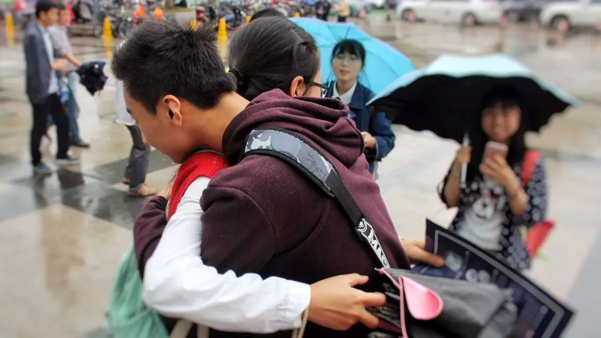
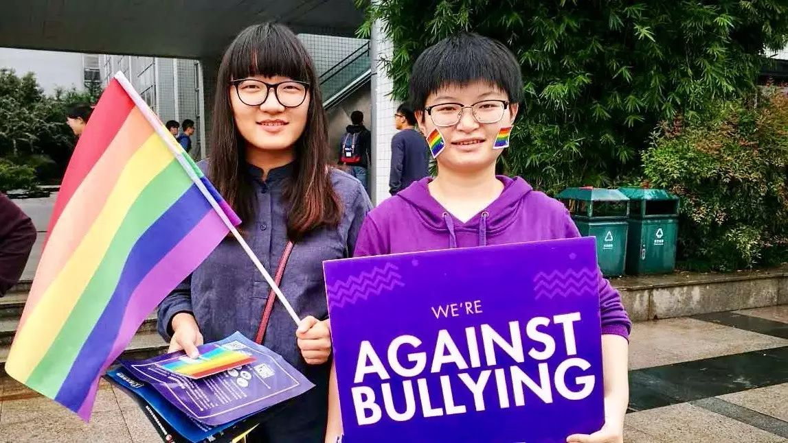
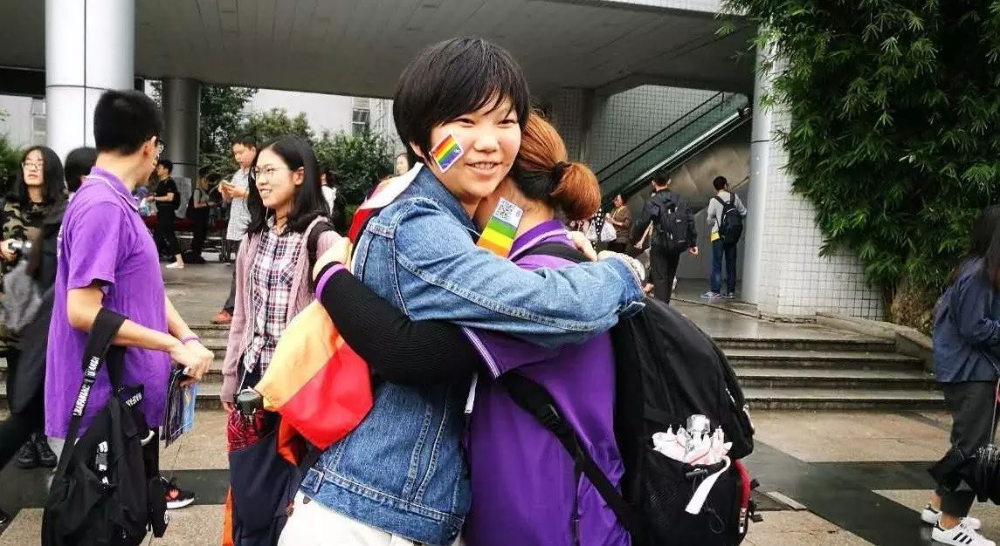

紫色校园 | 十月二十日中午十二点零五分的紫金港
10月20日中午十二点零五分的紫金港文广，如果你曾看到一个身着紫色上衣、手举彩虹旗的男生，那就是我了。
我是一名男同性恋者，同时也是酷儿论坛的志愿者之一。
那一天的我和志愿者们一起站在文广的人群中：如果人们支持紫色校园日的活动，可以通过拥抱志愿者来表达自己的友好。（点击这里查看什么是紫色校园日）

·紫色校园日现场举着标语和彩虹旗的志愿者们
潮湿的天气没有阻拦来一起帮助的论坛小伙伴们的热情——甚至有工作党从城中心赶来支持。活动中看到的来自友好人群的目光，同样令我们感动：
两位熟悉的女生向我走来——那是和我在学校同一个部门工作的小伙伴。她们换上了紫色的毛衣、T恤，热情地拥抱了我，与我说一声“加油”；
我的同性直人朋友在拥抱我后说道，你们很棒；
有一群外国友人与我们拥抱后主动询问合影，并说道“We stand for LGBT students”；

·紫色校园日现场和路人拥抱的志愿者
持续了一个多小时的宣传活动中，据不完全统计，我们的志愿者们共计收集到了好几十个拥抱；送出了许多紫色小礼物；并造成了一定的话题性。
明年的紫色校园日，我们还有更多的畅想……我们希望能做得更多，做得更好。

·紫色校园日现场和路人合照的志愿者
霸凌存在吗？
是，它确确实实地存在着，如影随形，渗入我们生活的每一个角落。
没有人与霸凌无关。
关于校园欺凌，你可能想要听一听这些故事（点击此处查看）
包括我自己——我是这些故事其中一个的主人公。
但由于过分压抑的性文化，人们中的大部分，都选择了噤声。
假如一个群体，在面对令人伤痛的境地时，它自己当中都没有人站出来，那它头上的云翳要何时才能散去呢。
我们是这么想的。
与此同时，世界上依然有正在遭受着霸凌的性少数学生们。我们不指望几个人的力量能够改变整个城市的高校性/别友好环境，但只要有人去做，希望便多生出一分。
所以我们站出来了。

·紫色校园日现场和路人拥抱的志愿者
我走来
断断续续地走来
紫色的衣装
沾满清凉的雨水
我有些犹豫
望望雨后湿滑的文广
望望人群
我用左手举起看板
右手紧握的彩虹旗默默无语
穿过广播嘈嘈切切的声响
穿过行人熙熙攘攘的目光
我走来
我向你走来
愿这一日的紫色点亮你的世界
谨以10.20的活动与此文
纪念所有因性倾向与性别表达而受到霸凌的学生群体